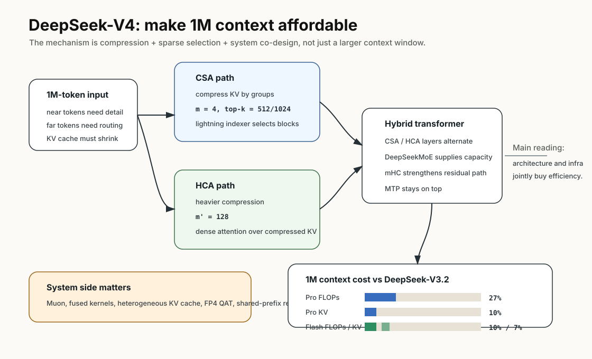
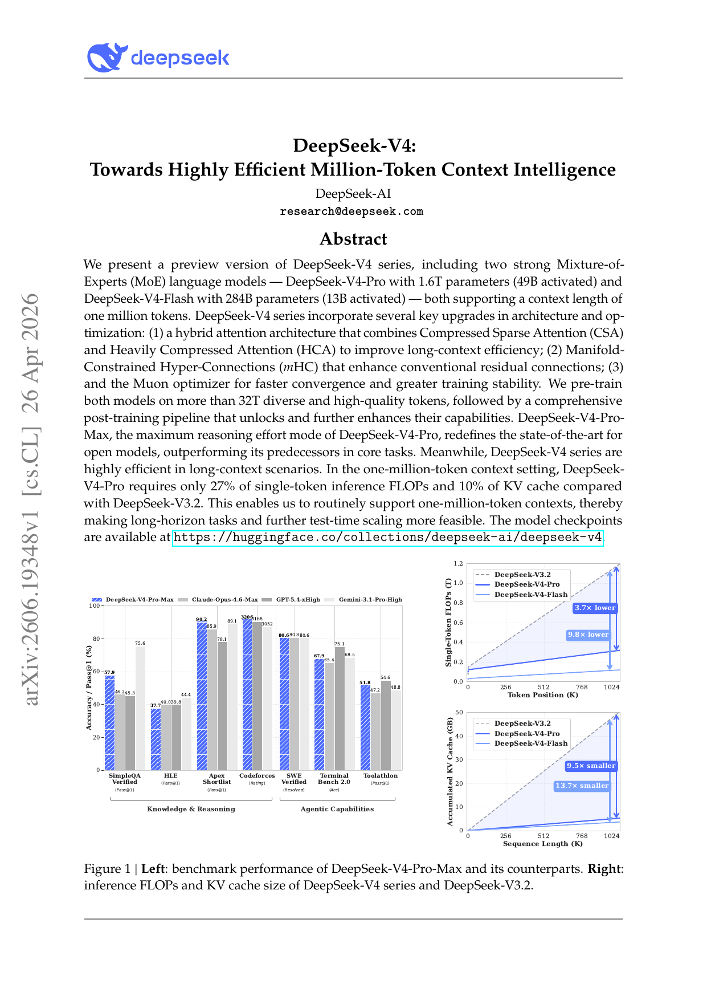
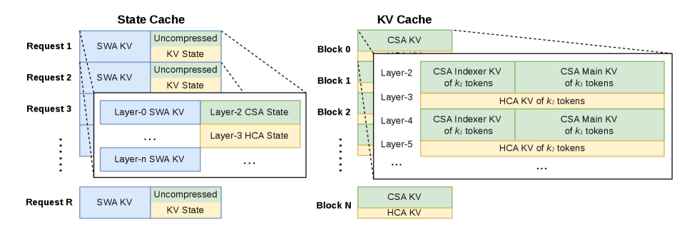
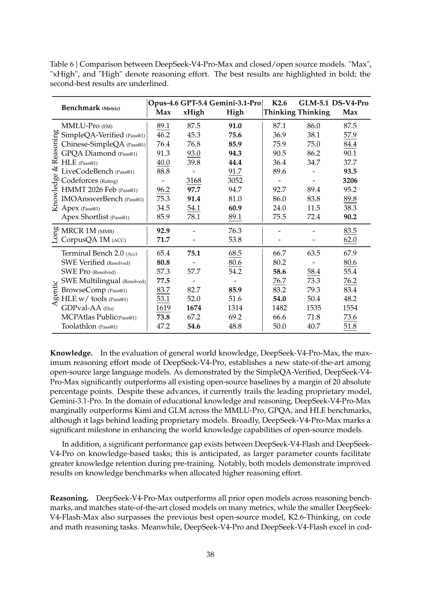

DeepSeek-V4：百万上下文的关键不是“能放”，而是“放得起”
- Paper: DeepSeek-V4: Towards Highly Efficient Million-Token Context Intelligence
- arXiv: 2606.19348
- 机构: DeepSeek-AI
- 类型: 模型架构 / 长上下文效率 / post-training report
- 关键词: CSA, HCA, mHC, Muon, FP4 QAT, MoE, 1M context, on-policy distillation
读法：给人和 agent 的路标
这篇要按“长上下文系统工程”读，不要按“谁家 context length 更长”读。快速路线是：先看 efficiency pipeline 图，抓住 CSA/HCA 怎么省 attention 和 KV cache；再看 1M context 下相对 V3.2 的 FLOPs/KV cache 数字；最后看 agent 评测和 tool-calling context path，判断它对真实 coding agent 有什么意义。
给 agent 以后检索时，关键词是：CSA、HCA、hybrid attention、mHC、Muon、FP4 QAT、heterogeneous KV cache、shared-prefix reuse、tool-calling reasoning persistence。这篇最适合放在“长上下文如何变便宜”而不是“长上下文 benchmark 排名”里。
一句话判断
DeepSeek-V4 最重要的贡献不是宣布支持 1M context，而是把百万上下文的推理成本压下去：通过 CSA/HCA 混合注意力、mHC、Muon、FP4 QAT 和专门的 KV cache/inference infrastructure，让 DeepSeek-V4-Pro 在 1M context 下只需要 DeepSeek-V3.2 的 27% single-token FLOPs 和 10% KV cache。
图表优先读法
| 先看 | 图/表 | 读完应该抓住什么 |
|---|---|---|
| 1 | Figure 1 | 能力图只是入口，右侧 FLOPs/KV cache 才是标题里的核心 claim |
| 2 | Figure 2 / Figure 3 | V4 通过 CSA/HCA 把远程上下文压缩、筛选，再保留局部细粒度依赖 |
| 3 | KV cache layout | 百万上下文能不能服务，最终要落到 cache block 和 shared-prefix reuse |
| 4 | Table 6 | V4 很强，但 agent benchmark 并不是所有项都领先 |
| 5 | Tool calling / thinking management | 长上下文效果依赖消息协议和 reasoning retention，不只是 raw window |
先抓住四个点
- 两个模型规模不同，目标也不同。 DeepSeek-V4-Pro 是 1.6T total / 49B activated；DeepSeek-V4-Flash 是 284B total / 13B activated。两者都支持 1M context。
- 核心架构升级是 hybrid attention。 CSA 先压缩 KV，再做 sparse attention；HCA 做更重的 KV 压缩但保留 dense attention。两者交错使用，目的是让长上下文不被注意力成本拖死。
- 训练和推理都为长上下文重做。 论文不只讲模型结构，还讲 Muon optimizer、mHC fused kernels、two-stage contextual parallelism、heterogeneous KV cache、shared-prefix reuse、FP4 QAT。
- post-training 用“专家训练 + 统一蒸馏”。 各 domain specialist 先独立 SFT/RL，再通过 on-policy distillation 汇总进统一模型，而不是直接混一个大 RL。
先看我整理的结构图

这张图是我把论文机制重新画了一遍：DeepSeek-V4 的主线不是“1M context”，而是用 CSA/HCA 把远距离 KV 压缩和选择，再靠 MoE、mHC、Muon、kernel、KV cache 和 FP4 QAT 把训练/推理系统一起配上。这样读 Figure 1/2/3 会更清楚。
图里有三个锚点：
- 注意力先分层：近邻 token 需要细粒度，远距离上下文可以压缩成块，再用 sparse selector 找回真正相关的部分。
- 省成本不只靠架构：mHC、fused kernels、TileLang、contextual parallelism、KV cache layout 都在帮架构落地。
- post-training 继续配合系统目标：专家模型先各自 SFT/RL，再 on-policy distillation 合并，最后用 FP4 QAT 把服务成本压下来。
论文原图 / 数据作为证据

Figure 1 右侧是整篇论文最有信息量的图：随着 context 到 1M，DeepSeek-V4-Pro / Flash 的 FLOPs 和 KV cache 增长斜率远低于 V3.2。左侧是能力图，但右侧才是 paper title 里 “Highly Efficient Million-Token” 的核心证据。
这张图要分两层读：
- 左侧能力图回答“V4 是否还是强模型”：它展示 reasoning、coding、long-context、agent 等方向的综合表现。
- 右侧效率图回答“1M 是否跑得起”：它把 FLOPs 和 KV cache 随 context 增长的斜率画出来，这才是 V4 相比 V3.2 的真实系统差异。
- 真正的 claim 是组合命题：如果只有能力，没有效率，1M context 只是昂贵展示；如果只有效率，没有能力，压缩就可能丢信息。V4 的主张是两者同时成立。
模型与训练规格
| 项 | DeepSeek-V4-Flash | DeepSeek-V4-Pro |
|---|---|---|
| Total parameters | 284B | 1.6T |
| Activated parameters | 13B | 49B |
| Context length | 1M | 1M |
| Transformer layers | 43 | 61 |
| Hidden dimension | 4096 | 7168 |
CSA compression m |
4 | 4 |
| CSA top-k | 512 | 1024 |
HCA compression m' |
128 | 128 |
| MoE routed experts | 256 | 384 |
| Activated routed experts | 6 | 6 |
| Pre-training tokens | 32T | 33T |
| Sequence length schedule | 4K -> 16K -> 64K -> 1M | 4K -> 16K -> 64K -> 1M |
训练 recipe 里几个细节值得记：
- Muon 用于大部分参数，embedding、prediction head、RMSNorm 权重仍用 AdamW。
- Flash 最大 batch size 是 75.5M tokens；Pro 最大 batch size 是 94.4M tokens。
- sparse attention 不是一开始就上，而是在训练到 64K sequence length 后引入，并先 warm up CSA 的 lightning indexer。
- MTP loss weight 大部分训练阶段是 0.3，学习率衰减阶段降到 0.1。
方法 Pipeline
1. Hybrid Attention: CSA + HCA

论文要解决的是 vanilla attention 在 ultra-long context 下的二次复杂度问题。它没有选择单一方案，而是把两种注意力交错使用：

| 组件 | 做什么 | 好处 | 风险/代价 |
|---|---|---|---|
| CSA | 每 m 个 KV 压成一个，再用 DSA 选 top-k compressed KV entries |
保留更细粒度选择能力，适合关键 token 检索 | 需要 indexer，工程复杂度高 |
| HCA | 每 m' 个 token 的 KV 压成一个，m' 远大于 m |
压缩更狠，KV cache 更省 | 信息损失风险更高 |
| Sliding window branch | 保留近邻细粒度依赖 | 防止局部依赖被压缩损坏 | 额外分支和 cache 管理 |
这套设计的直觉是：远距离上下文可以更粗粒度，近距离依赖需要细粒度，真正相关的远程块再通过 sparse selector 拉回来。
用更工程化的话说，CSA/HCA 是在回答一个现实问题：百万上下文里绝大多数 token 在某一步推理时都不是同等重要的。 V4 不再把所有远程 token 当成同一粒度的注意力对象，而是先压缩、再选择、再保留局部精细信息。这和个人 wiki/paper-reading 也很像：不是把所有笔记塞进 prompt，而是先做索引和筛选。
2. mHC: residual connection 的升级
mHC 是 Manifold-Constrained Hyper-Connections，用来强化传统 residual connection。论文把它作为模型能力增强而不是长上下文效率组件；换句话说，CSA/HCA 主要省成本，mHC 主要补表达能力。
3. Muon + infrastructure
论文花了很多篇幅讲工程实现，原因很简单：如果 attention 结构变复杂，但训练/推理 kernel 跟不上，理论省 FLOPs 没意义。
它们做了几类优化：
- MoE fused kernel，重叠 computation、communication、memory access。
- TileLang DSL，用来兼顾 kernel 开发效率和运行效率。
- deterministic kernel libraries，保证训练和推理可复现。
- Muon 的 hybrid ZeRO strategy。
- mHC recomputation 和 fused kernels。
- 推理侧 heterogeneous KV cache layout，加上 on-disk storage 做 shared-prefix reuse。
- post-training 时对 MoE expert weights 和 CSA indexer QK path 做 FP4 QAT。

关键效率数据
论文最硬的效率 claim：
| 1M context 下相对 DeepSeek-V3.2 | DeepSeek-V4-Pro | DeepSeek-V4-Flash |
|---|---|---|
| Single-token inference FLOPs | 27% | 10% |
| KV cache size | 10% | 7% |
这个表是理解 V4 的核心。DeepSeek-V4-Pro activated params 比 V3.2 更大，但长上下文推理成本反而大幅下降。Flash 则是更激进的效率版。
这组数字的含义很直接：V4-Pro 不是靠缩小模型换效率，它 activated params 更大，但通过注意力和 cache 设计让 1M 推理成本下降；V4-Flash 则更像面向高吞吐/低成本场景的版本。读这篇时，不要只记“1M context”，要记 1M 下 Pro 只要 V3.2 27% FLOPs、10% KV cache，Flash 是 10% FLOPs、7% KV cache。
关键评测数据

下面只摘和 long-context / coding-agent / reasoning 关系最密切的几项。
| Benchmark | DS-V4-Pro Max | K2.6 Thinking | GLM-5.1 Thinking | Opus-4.6 Max | GPT-5.4 xHigh | Gemini-3.1 Pro High |
|---|---|---|---|---|---|---|
| SimpleQA-Verified | 57.9 | 36.9 | 38.1 | 46.2 | 45.3 | 75.6 |
| HLE | 37.7 | 36.4 | 34.7 | 40.0 | 39.8 | 44.4 |
| LiveCodeBench | 93.5 | 89.6 | - | 88.8 | - | 91.7 |
| Codeforces rating | 3206 | - | - | - | 3168 | 3052 |
| MRCR 1M | 83.5 | - | - | 92.9 | - | 76.3 |
| CorpusQA 1M | 62.0 | - | - | 71.7 | - | 53.8 |
| Terminal Bench 2.0 | 67.9 | 66.7 | 63.5 | 65.4 | 75.1 | 68.5 |
| SWE Verified | 80.6 | 80.2 | - | 80.8 | - | 80.6 |
| SWE Pro | 55.4 | 58.6 | 58.4 | 57.3 | 57.7 | 54.2 |
| SWE Multilingual | 76.2 | 76.7 | 73.3 | 77.5 | - | - |
| MCPAtlas Public | 73.6 | 66.6 | 71.8 | 73.8 | 67.2 | 69.2 |
| Toolathlon | 51.8 | 50.0 | 40.7 | 47.2 | 54.6 | 48.8 |
读法：
- 开源模型里，DeepSeek-V4-Pro-Max 很强，但不是所有 agent benchmark 都领先。 SWE Pro 上它低于 K2.6 和 GLM-5.1；Terminal Bench 2.0 低于 GPT-5.4 和 Gemini 3.1 Pro。
- 长上下文上有明确亮点。 MRCR 1M 高于 Gemini 3.1 Pro，但低于 Opus 4.6；CorpusQA 1M 也是同样格局。
- 推理/代码竞赛很强。 LiveCodeBench 93.5、Codeforces 3206 是亮点。
Agent 评测设置
论文的 agent setup 有几个具体细节：
- SWE-Verified、Terminal-Bench、SWE-Pro、SWE Multilingual 使用内部 evaluation framework。
- 工具是 minimal set：bash tool + file-edit tool。
- 最大 interaction steps 是 500。
- 最大 context length 是 512K tokens。
- Terminal-Bench 2.0 仍报告原始 dataset 分数，同时承认 GLM-5.1 提到过环境相关问题。
- Search agent 任务用 websearch 和 Python tool，同样最多 500 steps、512K context。
这个设置说明 DeepSeek-V4 的 agent 数字不是纯文本分数，而是工具环境里的结果。但因为 harness 是 in-house，所以跨公司对比仍要保留一点不确定性。
这里最该警惕的是归因问题：如果两个模型在不同公司内部 harness 下跑 Terminal-Bench 或 SWE-bench，分数差异可能来自 base model，也可能来自 tool schema、context retention、patch application、timeout、retry strategy。DeepSeek 把 agent 设置写出来是加分项，但仍不足以把跨模型分数当成完全干净的模型本体比较。
Tool calling 与 thinking 管理
V4 还改了 tool-call schema：使用特殊 |DSML| token 和 XML-based tool invocation 格式，目标是减少 escaping failure 和 tool-call error。
更有意思的是 thinking management：
- Tool-calling 场景保留完整 reasoning content，包括跨 user message boundary。
- 普通对话场景仍在新 user message 到来时丢弃前一轮 reasoning，避免上下文浪费。
- 论文提醒：如果 agent framework 用 user messages 模拟工具交互，例如 Terminus，可能不会触发 tool-calling context path，也就不能利用增强的 thinking persistence。
这和 Kimi K2.7 Code 文档里“必须保留 reasoning_content”的方向很一致：新一代 coding/agent 模型正在把 reasoning trace 当成 agent state 的一部分。
这部分对 agent 框架特别重要。很多框架把工具结果包装成普通 user message，这可能会绕开模型专门为 tool-calling 设计的 context path。V4 的提示是：未来模型的“长上下文能力”可能越来越依赖消息类型、工具协议和 reasoning retention，而不是只有 raw token window。
我怎么看
可信之处：
- 论文的 efficiency claim 很具体，有 FLOPs 和 KV cache 相对比例，不只是说“更长”。
- 架构、训练、kernel、KV cache、FP4 QAT 都讲到了，说明作者确实围绕 1M context 做了系统级 co-design。
- Table 6 没有只报自己领先的项，SWE Pro、Terminal Bench 这类不领先的地方也保留了。
需要警惕：
- 很多评测使用内部 harness，跨模型可比性仍然依赖工具、prompt、context management 和失败计分。
- 1M context 的真实价值不等于 MRCR/CorpusQA；企业代码库、长日志、长论文复现都可能有不同噪声分布。
- CSA/HCA 的实现复杂度很高，个人或小团队几乎不可能“复现同等系统”，更现实的是借鉴设计思想。
对我的价值
如果要借鉴 DeepSeek-V4，我会借三件事：
- 长上下文要算 KV cache。 个人 wiki/paper pipeline 里，长上下文不是越多越好，要知道哪些内容值得进上下文。
- agent state 要保留，但要分场景。 工具调用里的 reasoning/context 可以保留，普通聊天不一定要无限保留。
- 评测要同时看能力和成本。 一个模型在 1M context 下能跑，不代表它在成本、延迟、可靠性上可用。
我会把它转成个人 wiki 的一个原则：长上下文不是懒得整理的借口。真正好的系统应该先做结构化索引、局部读取、图表/公式/代码块的 artifact 管理，再把必要上下文放进模型。V4 的工程哲学其实很“知识库”：先压缩和检索，再精读关键块。
一句话收束
DeepSeek-V4 最值得记住的是：百万上下文不是一个模型规格，而是一整套架构、训练、kernel、cache 和 post-training 的系统工程；它的真正创新点在于把 1M context 从“能塞进去”推进到“推理成本可控”。